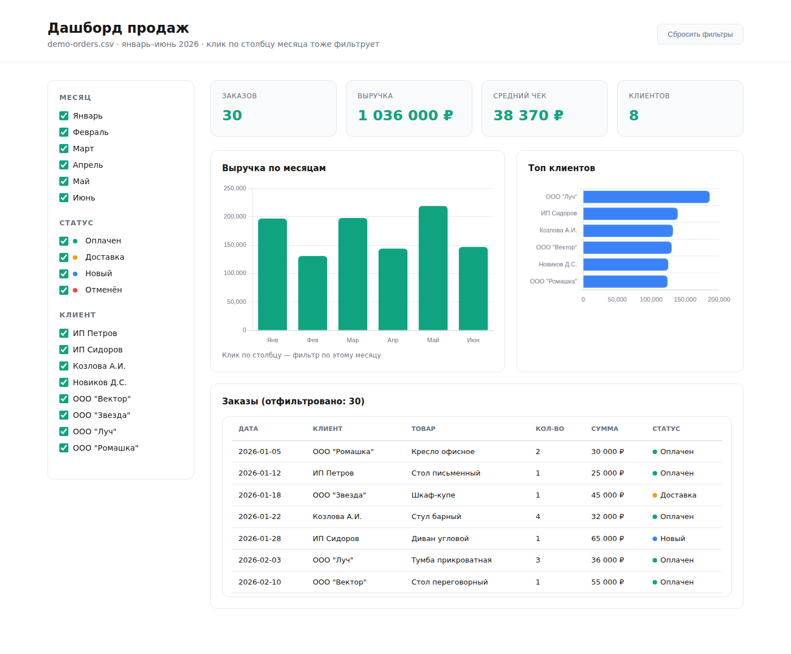
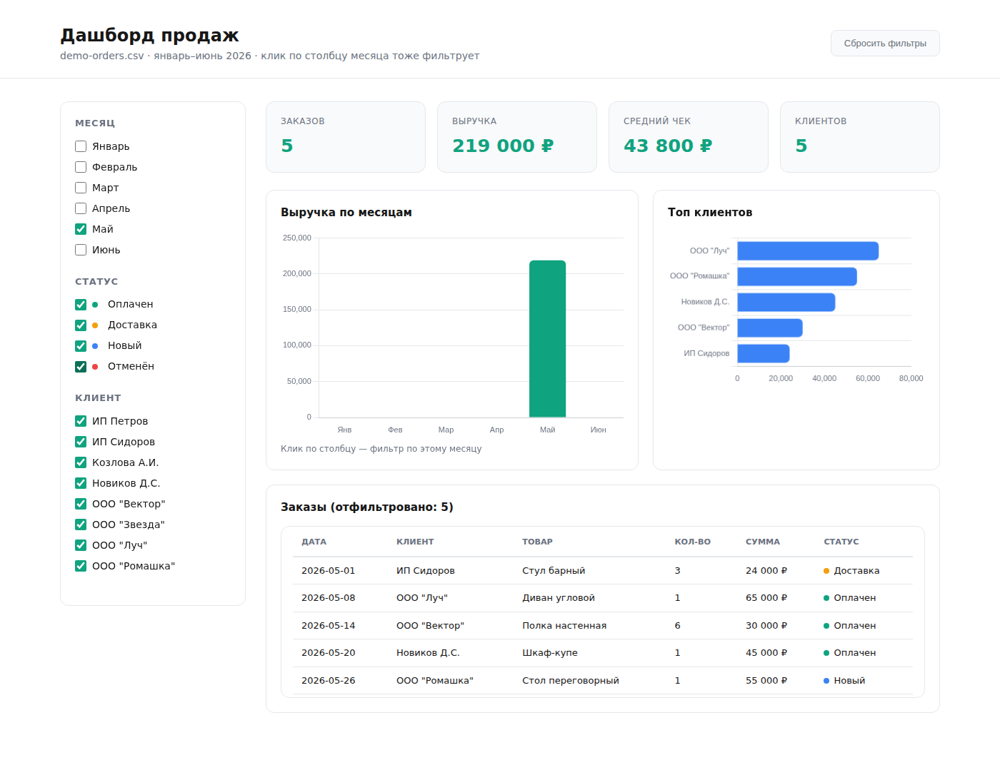

Дашборд с настоящими фильтрами: чекбоксы по месяцу, статусу и клиенту, которые на лету пересчитывают KPI, графики и таблицу — без перезагрузки страницы. Плюс клик прямо по столбцу графика, который сам включает фильтр.
В М1 ты уже делал HTML-отчёт по этой же выгрузке — но отчёт статичен: агент один раз посчитал цифры и зафиксировал их на странице. Дашборд — живой: ты сам выбираешь срез (только май, только один клиент, без отменённых) и видишь мгновенный пересчёт. Разница как между фотографией и окном.
Та же выгрузка, что и в М1 (своя или демо-данные). Ничего нового готовить не нужно.
Отчёт — снимок на момент создания: агент один раз посчитал и показал. Дашборд — инструмент: цифры пересчитываются в браузере при каждом изменении фильтра, без обращения к агенту. Это меняет и сам запрос — просить нужно не «покажи данные», а «дай мне инструмент управлять срезом данных».
Ключевая фраза — не «сделай дашборд», а с явным списком того, что должно реагировать:
Собери из этой выгрузки дашборд одной HTML-страницей: карточки с ключевыми цифрами, график выручки по месяцам, топ клиентов, таблица заказов. Добавь фильтры: по месяцу, по статусу заказа, по клиенту — чекбоксами. При изменении любого фильтра карточки, графики и таблица должны пересчитываться сразу, без перезагрузки страницы.
Учебный момент. Если не сказать явно «пересчитываются сразу, без перезагрузки» — велик шанс получить красивую страницу, где фильтры лежат рядом с графиками, но ни на что не влияют. Интерактивность — это код (JavaScript, который слушает изменения и перерисовывает), а не просто расположение элементов на странице.
Сделай так, чтобы клик по столбцу на графике «выручка по месяцам» сам включал фильтр по этому месяцу — не только чекбокс в панели.
Результат на демо-данных — дашборд целиком, до и после клика по маю:

Все фильтры сняты — видны все 30 заказов за полгода.

Один клик по столбцу «Май» — чекбоксы месяцев сами переключились, KPI и таблица пересчитались: 5 заказов, 219 000 ₽. Это тот же май, что и в отчёте из М1 — цифры сходятся, потому что источник данных один и тот же.
Открыть дашборд целиком (кликабельный): dashboard.html
Не спрашивай агента «дашборд интерактивный?» — покликай сам:
Ровно так же, как в М2-01 «Честная поправка»: красиво сделанный интерфейс — ещё не гарантия того, что он работает правильно. Единственная проверка — прощупать руками.
Какой фильтр/срез реально нужен в твоём бизнесе, которого здесь нет? (Например: по региону, по менеджеру, по каналу продаж.) Допиши его тем же способом — попроси добавить чекбоксы для нового измерения.
| Симптом | Причина | Решение |
|---|---|---|
| Чекбоксы есть, но ничего не меняется при клике | Попросили «дашборд», а не явную интерактивность | Проси конкретно: «пересчитывается без перезагрузки при изменении фильтра» |
| После фильтра цифры выглядят правдоподобно, но неверны | Поверили на глаз, не сверили с известными цифрами | Сверяй хотя бы один срез с уже посчитанным раньше результатом (отчёт М1) |
| Клик по графику ничего не делает | Не попросили отдельно — это не входит в «сделай дашборд» по умолчанию | Явно попроси клик-фильтрацию отдельным шагом |
| Дашборд красивый, но с одной жёсткой выгрузкой внутри | Данные вшиты в код без явного запроса на переиспользование | Для регулярного использования — попроси загружать данные из отдельного CSV/JSON, а не хардкодить |
Собери дашборд по своей реальной выгрузке с фильтрами, которые реально нужны тебе (не по шаблону из урока). Покликай сам, найди хотя бы одну вещь, которую хочешь поправить, и попроси агента исправить.
При проверке этого дашборда клик по графику с первой попытки не сработал — координаты клика по канвасу графика были рассчитаны неточно, и фильтр не включался. Нашлось это только потому, что цифры после «клика» не изменились: 30 заказов остались 30. Мораль ровно та же, что в шаге 4: не верь интерфейсу на слово, сверяй цифры.